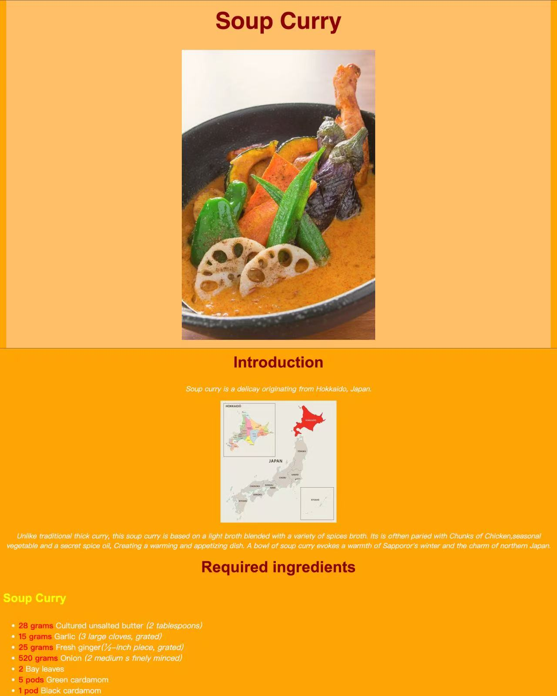
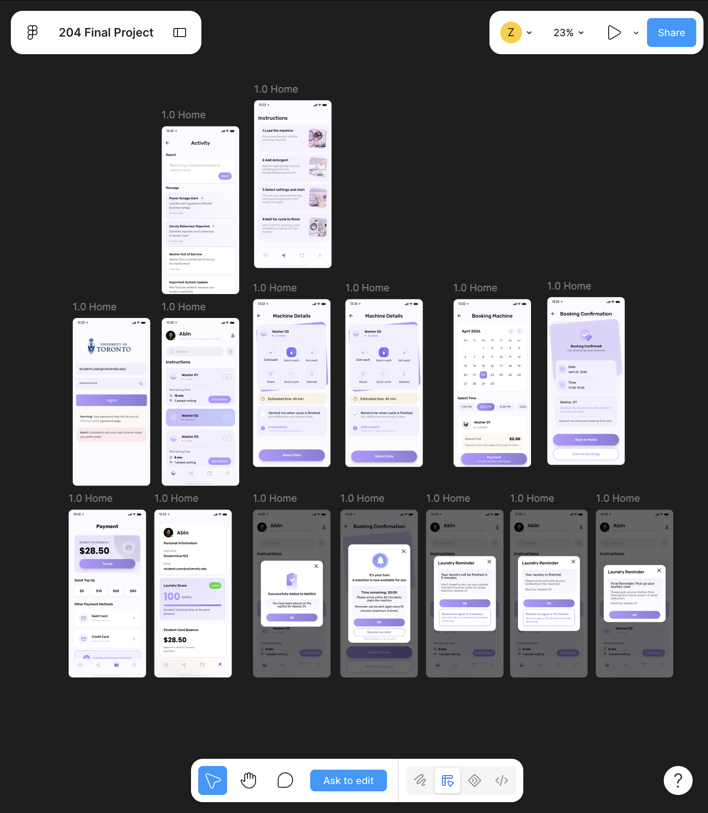
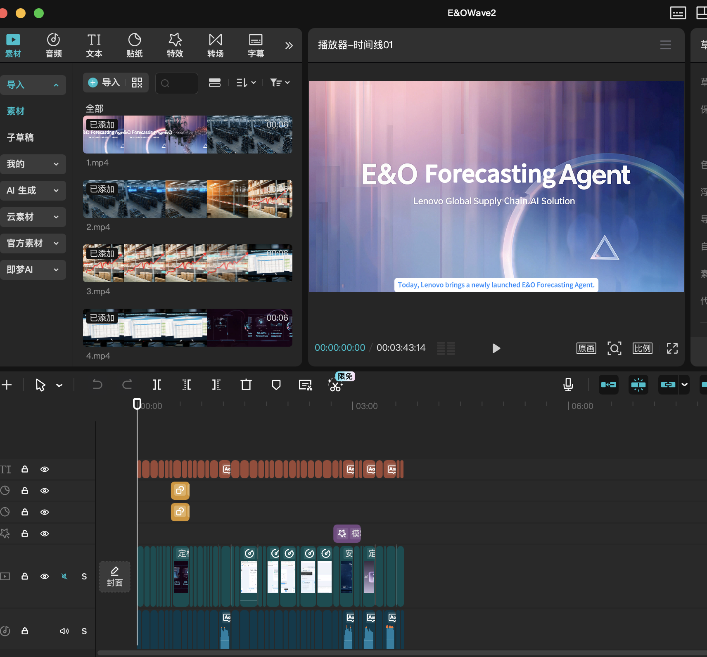

Project 1
Website Design: receipt

receipt design is my project during the CCT 260 website design. In this case, I introduced the soup curry from janpan. In this project, I learned how to modulized the content, such as header, introducetion, cooking steps, and make link.
Project 2
Figma Design interface: School Laundry APP

School Laundry APP is my project during the CCT 204 Design. IN this course, I learned how to use Figma in the process of design the APP's interface. Also I knew some logic of the user's experience and user's interface. That would help me to stdanding a view from the users.
Project 3
Video production

In this summer, I got the intership. During the period, I made some internal copilot' introduction videos. In this case, I learned how to appeal the viwer' attention. It would be helpful for my future design.